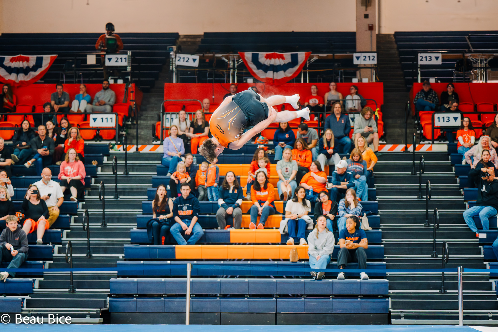

I’m a collegiate gymnast who got into photography and video just from being outside and exploring Arkansas. At first it was just something I enjoyed doing, but it didn’t take long before I started wanting to capture the moments most people never get to see.
Along the way, I’ve had a couple internships that really shaped how I shoot. I worked with Made By Prisma doing product photography, and with the Northwest Arkansas Naturals, where I got a look at how high-level sports media actually works behind the scenes.
Being an athlete has honestly changed everything for me. I’m able to be in spaces and moments that most photographers aren’t, which lets me capture sports in a more real and raw way.
While at Greenville University, I’ve also had opportunities near St. Louis to work with artists, which pushed me creatively and helped me expand beyond just sports.
At the end of the day, I’m driven by capturing moments people don’t usually get to experience, whether that’s the intensity of a routine, something unexpected in nature, or what happens behind the scenes. I just want people to be able to feel like they were there.